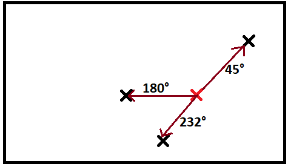

[⭐⭐⭐] 26. Egér (6 pont)
Szeretnénk elmozdítani a kurzort a képernyő egyik pontjáról a másik pontra. A kérdés, hogy ehhez hány fokos szögben kell elmozgatni az egerünket.
A képernyő bal alsó pontja a (0, 0) pont, vízszintes irányban az X tengely, függőlegesben pedig az Y tengely helyezkedik el.
A kurzormozgatas függvény két paramétert vár: az induló pozíciót és a cél pozíciót. A cél visszaadni, hogy a vízszintessel hány fokos szöget zárjon be a kurzormutatónk.
A megoldást egészre kerekítve add vissza!
Ha a célpozíció megegyezik a kezdeti pozícióval, akkor a visszatérési érték legyen 0.
Tipp: egy Pozíciónak x és y mezői vannak.

Érdemes használni a Math osztályban definiált PI konstans, illetve az osztály egyéb statikus metódusait.